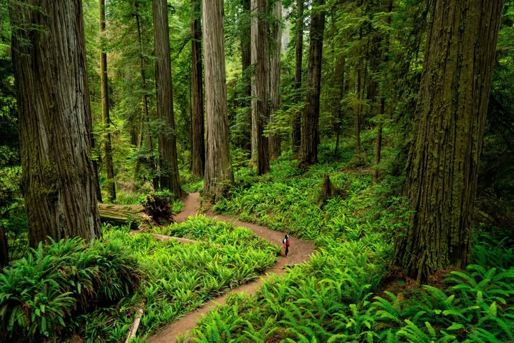

Highway 1 Is Back: Your Perfect Big Sur Day
Few stretches of highway in the world match the drama of California's Big Sur coast, and the trails surrounding Bixby Creek Bridge put hikers directly in the heart of it. Whether you're chasing the golden light of late afternoon or the moody blues of an overcast morning, the views from these cliffside paths are unlike anything else in the state.

Lost in the Giants: Hiking California's Redwoods
Standing beneath a coast redwood is one of the most humbling experiences California has to offer. The trails winding through Humboldt Redwoods State Park and Redwood National Park take hikers past trees that have stood for over a thousand years, their thick trunks rising into a canopy that filters sunlight into soft, cathedral green.

Spring Surge: Yosemite at Peak Snowmelt
Every spring, snowmelt from the high Sierra transforms Yosemite Valley into a scene of extraordinary power. Yosemite Falls thunders at its fullest while valley meadows flood into temporary wetlands. The trails around the valley floor become some of the most rewarding — and wet — walks in the park.

Golden Hour at Joshua Tree
Joshua Tree National Park transforms at dusk. The same boulder fields and twisted Joshua trees that look bleached and harsh at noon glow amber and deep violet as the sun drops below the Mojave horizon. For hikers willing to time their treks around the light, the park rewards with scenery that feels almost otherworldly.

Wildflowers and Ocean Views: Marin Headlands
Just north of the Golden Gate, the Marin Headlands offer some of the most accessible and spectacular coastal hiking in Northern California. A narrow trail threads through hillsides thick with California poppies and coastal scrub, with sweeping views of the Pacific stretching south toward San Francisco.

Summit Dreams: Ascending Mount Whitney
At 14,505 feet, Mount Whitney is the highest peak in the contiguous United States, and the trail to the summit is one of the most coveted day hikes in California. The route is not technically difficult, but the altitude, distance, and snow conditions demand careful planning — especially in early season when the upper slopes are still buried in white.